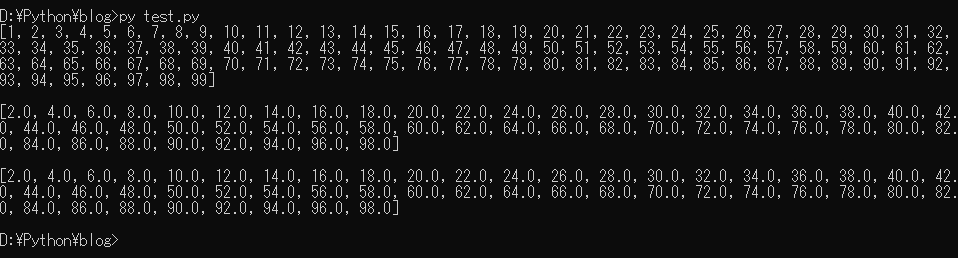
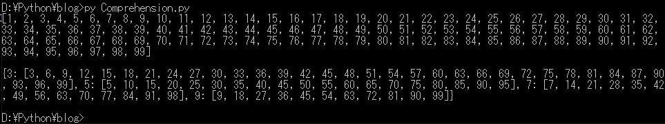
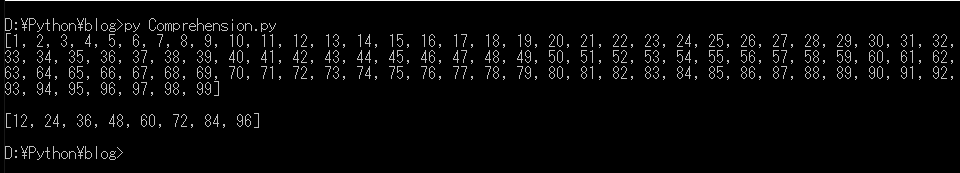
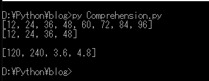
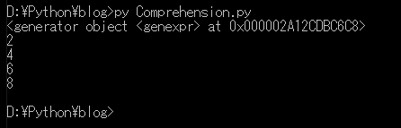

[Python] 05. コンプリヘンション(Comprehension)を使用する方法
こんにちは。明月です。
この投稿はPythonのコンプリヘンション(Comprehension)を使用する方法に関する説明です。
Pythonのデータタイプでリスト、ディクショナリ、タプルなどを説明したことがあります。
link - [Python] 03. Pythonでリスト(list)とタプル(tuple)、そしてディクショナリ(dictionary)、セット(set)
コンプリヘンション(Comprehension)とはリスト、ディクショナリ、タプルの資料構造をよりしやすく検索、抽出するPythonの文法です。
個人的にC#のLinqやJavaのStream Apiと似てる文法だと思います。
例のため、リストを作りましょう。
# リストで１から99までのデータを生成する。
list1 = list(range(1,100))
# コンソール出力
print(list1)
# 改行
print()
# 結果リスト
ret = []
# forで繰り返し
for i in list1:
# 偶数の場合
if i%2 == 0:
# retのリストに実数タイプで格納
ret.append(float(i))
# コンソール出力
print(ret)
# 改行
print()
# listでx%2==0がTrueの条件、つまり、偶数を実数タイプに変換してretに格納する。
ret = [float(x) for x in list1 if x%2 == 0]
# コンソール出力
print(ret)

結果をみれば以前にforの繰り返し式でifの条件で偶数でフィルターして実数タイプに変換しました。
forとifをよく知っているとそのように実装します。
でもコードステップが少なくても5行目ですね。でもコンプリヘンションを使うと1行目で抽出ができます。
コンプリヘンションでを使う方法ではリストなので大括弧([])で始めは出力タイプ、forでlist1から抽出する。
条件はif x%2 == 0の意味です。
リストコンプリヘンションがあればディクショナリコンプリヘンションもあります。
# リストで１から99までのデータを生成する。
list1 = list(range(1,100))
# コンソール出力
print(list1)
# 改行
print()
# ディクショナリでキーで使うタプル
tuple1 = (3,5,7,9)
# ディクショナリコンプリヘンションは{キー:値}という構造で作成すればよい。
# 下記の式はtupleをループでキーを生成してそのキーで当該な値をリストを作成してタプルをキーでする倍数を作成するディクショナリだ。
dic1 = {t:[l for l in list1 if l%t==0] for t in tuple1}
# コンソール出力
print(dic1)

リストとディクショナリが可能ならセットも作られます。
# リストで１から99までのデータを生成する。
list1 = list(range(1,100))
# コンソール出力
print(list1)
# 改行
print()
# 3の倍数のセットを生成する。
set1 = {x for x in list1 if x%3==0}
# 4の倍数のセットを生成する。
set2 = {x for x in list1 if x%4==0}
# 3の倍数と4の倍数の積集合、つまり12倍数のリストを生成する。
list2 = list(set1&set2)
# 整列
list2.sort()
# コンソール出力
print(list2)

そのほコンプリヘンションはifを重ねることもできるし、if〜else構造にすることもできます。
# リストで１から99までのデータを生成する。
list1 = list(range(1,100))
# 3の倍数のセットを生成する。
set1 = {x for x in list1 if x%3==0}
# 4の倍数のセットを生成する。
set2 = {x for x in list1 if x%4==0}
# 3の倍数と4の倍数の積集合、つまり12倍数のリストを生成する。
list2 = list(set1&set2)
# 整列
list2.sort()
# list2は12倍数がある。
print(list2)
# 10の倍数がではなく、50以下の12倍数をを生成する。
list3 = [x for x in list2 if x%10!=0 if x<50]
# コンソール出力
print(list3)
# 改行
print()
# 上のlist3で30より大きい数は10で分割するし、小さい数は10を乗算する。
# ifの場合結果値が前に置き、elseの場合は後で置く。
list4 = [x/10 if x>30 else x*10 for x in list3]
# コンソール出力
print(list4)

ここまでリスト（list）、ディクショナリ（dictionary）、セット（set）のコンプリヘンションを説明しました。
上記の形態を見れば、リストは大括弧（[]）、ディクショナリとセットは中括弧を（{}）を使用してヒコンプリヘンションを生成します。それを従って括弧でコンプリヘンションができると思い、タプルも小括弧(())でコンプリヘンションができると思われます。
でもタプルはコンプリヘンションは存在しません。タプルは修正できないリストだからです。
でも、小括弧(())でコンプリヘンションの文法を作成すれば、コンプリヘンションではなく、ジェネレータになります。
# リストで１から49までのデータを生成する。
list1 = list(range(1,50))
# ジェネレータ生成
generator = (x for x in list1 if x%2 == 0)
# ジェネレータ構造
print(generator)
# コンソール出力
print(next(generator))
print(next(generator))
print(next(generator))
print(next(generator))

ジェネレータは、データ構造ではなく、関数の構造であるため、他の投稿で説明します。
ここまでPythonのコンプリヘンション(Comprehension)を使用する方法に関する説明でした。
ご不明なところや間違いところがあればコメントしてください。
- [Python] 21. データベース(mariaDB)を連結する方法2020/06/24 18:51:50
- [Python] 20. stringフォマード(Formatting)と補間法(interpolation)2020/06/23 19:03:21
- [Python] 19. 非同期IOのasync/await(asyncio)を使う方法2020/06/22 18:10:12
- [Python] 18. ネットワーク(Socket)通信する方法2020/06/18 19:53:56
- [Python] 17. スレッド(Thread)とロック(lock)、そしてデッドロック(deadlock)2020/06/18 00:19:45
- [Python] 16. IO(ファイル読み取り、書き込み)を扱う方法2020/06/16 18:37:00
- [Python] 15. クラスを継承する方法2020/06/15 18:20:07
- [Python] 14. クラスプロパティ(Property)2020/06/12 17:45:13
- [Python] 13. クラス関数(class method)とダック・タイピング、そして特殊メソッド2020/06/11 19:42:29
- [Python] 12. クラス(Class)を使う方法2020/06/10 19:33:33
- [Python] 11. デコレーター（Decorator）を使う方法2020/06/09 17:27:18
- [Python] 10. モジュールとパッケージ(import)2020/06/08 19:07:50
- [Python] 09. 例外処理する方法2020/06/05 17:11:47
- [Python] 08. ジェネレータ(Generator)2020/06/04 18:46:08
- [Python] 07. globalとnonlocal2020/06/03 20:34:49
- [Python] XMLファイルを扱う方法2020/06/26 19:18:14
- [Python] IOを利用してCSVファイルを扱う方法2020/06/25 18:20:30
- [Python] 21. データベース(mariaDB)を連結する方法2020/06/24 18:51:50
- [Python] 20. stringフォマード(Formatting)と補間法(interpolation)2020/06/23 19:03:21
- [Python] 19. 非同期IOのasync/await(asyncio)を使う方法2020/06/22 18:10:12
- [Python] 18. ネットワーク(Socket)通信する方法2020/06/18 19:53:56
- [Python] 17. スレッド(Thread)とロック(lock)、そしてデッドロック(deadlock)2020/06/18 00:19:45
- [Python] 16. IO(ファイル読み取り、書き込み)を扱う方法2020/06/16 18:37:00
- [Python] 15. クラスを継承する方法2020/06/15 18:20:07
- [Python] 14. クラスプロパティ(Property)2020/06/12 17:45:13
- [Python] 13. クラス関数(class method)とダック・タイピング、そして特殊メソッド2020/06/11 19:42:29
- [Python] 12. クラス(Class)を使う方法2020/06/10 19:33:33
- [Python] 11. デコレーター（Decorator）を使う方法2020/06/09 17:27:18
- [Python] 10. モジュールとパッケージ(import)2020/06/08 19:07:50
- [Python] 09. 例外処理する方法2020/06/05 17:11:47